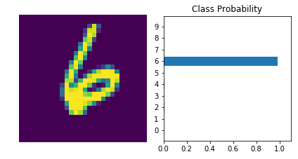

Training Neural Networks
Table of Contents
Introduction
This is from Udacity's Deep Learning Repository which supports their Deep Learning Nanodegree.
The network we built in the previous part isn't so smart, it doesn't know anything about our handwritten digits. Neural networks with non-linear activations work like universal function approximators. There is some function that maps your input to the output. For example, images of handwritten digits to class probabilities. The power of neural networks is that we can train them to approximate this function, and basically any function given enough data and compute time.
At first the network is naive, it doesn't know the function mapping the inputs to the outputs. We train the network by showing it examples of real data, then adjusting the network parameters such that it approximates this function.
To find these parameters, we need to know how poorly the network is predicting the real outputs. For this we calculate a loss function (also called the cost), a measure of our prediction error. For example, the mean squared loss is often used in regression and binary classification problems
\[ \large \ell = \frac{1}{2n}\sum_i^n{\left(y_i - \hat{y}_i\right)^2} \]
where \(n\) is the number of training examples, \(y_i\) are the true labels, and \(\hat{y}_i\) are the predicted labels.
By minimizing this loss with respect to the network parameters, we can find configurations where the loss is at a minimum and the network is able to predict the correct labels with high accuracy. We find this minimum using a process called gradient descent. The gradient is the slope of the loss function and points in the direction of fastest change. To get to the minimum in the least amount of time, we then want to follow the gradient (downwards). You can think of this like descending a mountain by following the steepest slope to the base.
Backpropagation
For single layer networks, gradient descent is straightforward to implement. However, it's more complicated for deeper, multilayer neural networks like the one we've built. Complicated enough that it took about 30 years before researchers figured out how to train multilayer networks.
Training multilayer networks is done through backpropagation which is really just an application of the chain rule from calculus. It's easiest to understand if we think of our two layer network as a graph representation.
The Forward Pass
In the forward pass through the network, our data and operations go from bottom to top. We pass the input \(x\) through a linear transformation \(L_1\) with weights \(W_1\) and biases \(b_1\). The output then goes through the sigmoid operation \(S\) and another linear transformation \(L_2\). Finally we calculate the loss \(\ell\). We use the loss as a measure of how bad the network's predictions are. The goal then is to adjust the weights and biases to minimize the loss.
Backwards Pass
To train the weights with gradient descent, we propagate the gradient of the loss backwards through the network. Each operation has some gradient between the inputs and outputs. As we send the gradients backwards, we multiply the incoming gradient with the gradient for the operation. Mathematically, this is really just calculating the gradient of the loss with respect to the weights using the chain rule.
\[ \large \frac{\partial \ell}{\partial W_1} = \frac{\partial L_1}{\partial W_1} \frac{\partial S}{\partial L_1} \frac{\partial L_2}{\partial S} \frac{\partial \ell}{\partial L_2} \]
We update our weights using this gradient with some learning rate \(\alpha\).
\[ \large W^\prime_1 = W_1 - \alpha \frac{\partial \ell}{\partial W_1} \]
The learning rate \(\alpha\) is set such that the weight update steps are small enough that the iterative method settles in a minimum.
Losses in PyTorch
Let's start by seeing how we calculate the loss with PyTorch. Through the nn module, PyTorch provides losses such as the cross-entropy loss (nn.CrossEntropyLoss). You'll usually see the loss assigned to criterion. As noted in the last part, with a classification problem such as MNIST, we're using the softmax function to predict class probabilities. With a softmax output, you want to use cross-entropy as the loss. To actually calculate the loss, you first define the criterion then pass in the output of your network and the correct labels.
There is something really important to note here. Looking at the documentation for nn.CrossEntropyLoss:
This criterion combines
nn.LogSoftmax()andnn.NLLLoss()in one single class.The input is expected to contain scores for each class.
This means we need to pass in the raw output of our network into the loss, not the output of the softmax function. This raw output is usually called the logits or scores. We use the logits because softmax gives you probabilities which will often be very close to zero or one but floating-point numbers can't accurately represent values near zero or one (read more here). It's usually best to avoid doing calculations with probabilities, typically we use log-probabilities.
Imports
From Python
from collections import OrderedDict
From PyPi
from torch import nn, optim
from torchvision import datasets, transforms
import seaborn
import torch
import torch.nn.functional as F
The Udacity Repository
from nano.pytorch import helper
Plotting
get_ipython().run_line_magic('matplotlib', 'inline')
get_ipython().run_line_magic('config', "InlineBackend.figure_format = 'retina'")
seaborn.set(style="whitegrid",
rc={"axes.grid": False,
"font.family": ["sans-serif"],
"font.sans-serif": ["Latin Modern Sans", "Lato"],
"figure.figsize": (8, 6)},
font_scale=2)
The Network
Define a Transform
We are going to create a pipeline to normalize the data. The argument for Normalize are a tuple of means and a tuple of standard-deviations. You use tuples because you need to pass in a value for each of the color channels.
transform = transforms.Compose([transforms.ToTensor(),
transforms.Normalize((0.5, 0.5, 0.5),
(0.5, 0.5, 0.5)),
])
The Data
Once again we're going to use the MNIST data-set. It's important to use the same output folder as the last time or you will end up downloading a new copy of the dataset.
digits = datasets.MNIST('~/datasets/MNIST/', download=True, train=True, transform=transform)
data_loader = torch.utils.data.DataLoader(digits, batch_size=64, shuffle=True)
The Network
We're going to build a feed-forward network using the pipeline-style of network definition and then pass in a batch of image to examine the loss.
Some Constants
These are the hyperparameters for our model. The number if inputs is the number of pixels in the images. The number of outputs is the number of digits (so 10).
inputs = 28**2
hidden_nodes_1 = 128
hidden_nodes_2 = 64
outputs = 10
Since this gets used way further down I'm going to make a namespace for it so (maybe) it'll be easier to remember where the values are from.
class HyperParameters:
inputs = 28**2
hidden_nodes_1 = 128
hidden_nodes_2 = 64
outputs = 10
learning_rate = 0.003
The Model
model = nn.Sequential(
OrderedDict(
input_to_hidden=nn.Linear(inputs, hidden_nodes_1),
relu_1=nn.ReLU(),
hidden_to_hidden=nn.Linear(hidden_nodes_1, hidden_nodes_2),
relu_2=nn.ReLU(),
hidden_to_output=nn.Linear(hidden_nodes_2, outputs)))
The Loss
We're going to use CrossEntropyLoss.
criterion = nn.CrossEntropyLoss()
The Images
We're going to pull the next (first) batch of images and reshape it.
images, labels = next(iter(data_loader))
print(images.shape)
torch.Size([64, 1, 28, 28])
This will flatten the images.
images = images.view(images.shape[0], -1)
print(images.shape)
torch.Size([64, 784])
So, that one isn't so obvious, but when the view method gets passed a -1 it interprets it as meaning you want to flatten the tensor. In this case we passed in the number of rows so it just reduces the other dimensions to columns. It kind of seems like you lose a column in there somewhere…
One Pass
We're going to pass our model the images to make a single forward pass and get the logits for them.
logits = model(images)
Now we'll calculate our model's loss with the logits and the labels.
loss = criterion(logits, labels)
print(loss)
tensor(2.3135, grad_fn=<NllLossBackward>)
According to the original author of this exercise
…it's more convenient to build the model with a log-softmax output using
nn.LogSoftmaxorF.log_softmax. Then you can get the actual probabilities by taking the exponentialtorch.exp(output). With a log-softmax output, you want to use the negative log likelihood loss,nn.NLLLoss.
Build a model that returns the log-softmax as the output and calculate the loss using the negative log likelihood loss. Note that for nn.LogSoftmax and F.log_softmax you'll need to set the dim keyword argument appropriately. dim=0 calculates softmax across the rows, so each column sums to 1, while dim=1 calculates across the columns so each row sums to 1. Think about what you want the output to be and choose dim appropriately.
Network 2 (with Log Softmax)
model = nn.Sequential(
OrderedDict(
input_to_hidden=nn.Linear(inputs, hidden_nodes_1),
relu_1=nn.ReLU(),
hidden_to_hidden=nn.Linear(hidden_nodes_1, hidden_nodes_2),
relu_2=nn.ReLU(),
hidden_to_output=nn.Linear(hidden_nodes_2, outputs),
log_softmax=nn.LogSoftmax(dim=1)
)
)
And now our loss.
criterion = nn.NLLLoss()
Now we get the next batch of images.
images, labels = next(iter(data_loader))
And once again we flatten them.
images = images.view(images.shape[0], -1)
A forward pass on the batch.
logits = model(images)
Calculate the loss with the logits and the labels
loss = criterion(logits, labels)
print(loss)
tensor(2.3208, grad_fn=<NllLossBackward>)
So that's interesting, but what does it mean?
On To Autograd
Now that we know how to calculate a loss, how do we use it to perform backpropagation? Torch provides a module, autograd, for automatically calculating the gradients of tensors. We can use it to calculate the gradients of all our parameters with respect to the loss. Autograd works by keeping track of operations performed on tensors, then going backwards through those operations, calculating gradients along the way. To make sure PyTorch keeps track of operations on a tensor and calculates the gradients, you need to set requires_grad = True on a tensor. You can do this at creation with the requires_grad keyword, or at any time with x.requires_grad_(True).
You can turn off gradients for a block of code with the torch.no_grad() content:
x = torch.zeros(1, requires_grad=True)
>>> with torch.no_grad():
... y = x * 2
>>> y.requires_grad
False
Also, you can turn on or off gradients altogether with torch.set_grad_enabled(True|False).
The gradients are computed with respect to some variable z with z.backward(). This does a backward pass through the operations that created z.
x = torch.randn(2,2, requires_grad=True)
print(x)
tensor([[-0.7567, -0.2352],
[-0.9346, 0.3097]], requires_grad=True)
y = x**2
print(y)
tensor([[0.5726, 0.0553],
[0.8735, 0.0959]], grad_fn=<PowBackward0>)
We can see the operation that created y, a power operation PowBackward0.
grad_fn shows the function that generated this variable
print(y.grad_fn)
<PowBackward0 object at 0x7f591c505c50>
The autgrad module keeps track of these operations and knows how to calculate the gradient for each one. In this way, it's able to calculate the gradients for a chain of operations, with respect to any one tensor. Let's reduce the tensor y to a scalar value, the mean.
z = y.mean()
print(z)
tensor(0.3993, grad_fn=<MeanBackward1>)
You can check the gradients for x and y but they are empty currently.
print(x.grad)
None
To calculate the gradients, you need to run the .backward method on a Variable, z for example. This will calculate the gradient for z with respect to x
\[ \frac{\partial z}{\partial x} = \frac{\partial}{\partial x}\left[\frac{1}{n}\sum_i^n x_i^2\right] = \frac{x}{2} \]
z.backward()
print(x.grad)
print(x/2)
tensor([[-0.3783, -0.1176],
[-0.4673, 0.1548]])
tensor([[-0.3783, -0.1176],
[-0.4673, 0.1548]], grad_fn=<DivBackward0>)
These gradients calculations are particularly useful for neural networks. For training we need the gradients of the weights with respect to the cost. With PyTorch, we run data forward through the network to calculate the loss, then, go backwards to calculate the gradients with respect to the loss. Once we have the gradients we can make a gradient descent step.
Loss and Autograd together
When we create a network with PyTorch, all of the parameters are initialized with requires_grad = True. This means that when we calculate the loss and call loss.backward(), the gradients for the parameters are calculated. These gradients are used to update the weights with gradient descent. Below you can see an example of calculating the gradients using a backwards pass.
Get the next batch.
images, labels = next(iter(data_loader))
images = images.view(images.shape[0], -1)
Now get the logits and loss for the batch.
logits = model(images)
loss = criterion(logits, labels)
This is what the weights from the input layer to the first hidden layer look like before and after the backward-pass.
print('Before backward pass: \n{}\n'.format(model.input_to_hidden.weight.grad))
loss.backward()
print('After backward pass: \n', model.input_to_hidden.weight.grad)
Before backward pass:
None
After backward pass:
tensor([[ 0.0001, 0.0001, 0.0001, ..., 0.0001, 0.0001, 0.0001],
[ 0.0011, 0.0011, 0.0011, ..., 0.0011, 0.0011, 0.0011],
[ 0.0004, 0.0004, 0.0004, ..., 0.0004, 0.0004, 0.0004],
...,
[ 0.0001, 0.0001, 0.0001, ..., 0.0001, 0.0001, 0.0001],
[ 0.0003, 0.0003, 0.0003, ..., 0.0003, 0.0003, 0.0003],
[-0.0005, -0.0005, -0.0005, ..., -0.0005, -0.0005, -0.0005]])
Training the Network
There's one last piece we need to start training, an optimizer that we'll use to update the weights with the gradients. We get these from PyTorch's optim package(). For example we can use stochastic gradient descent with optim.SGD. You can see how to define an optimizer below.
Optimizers require the parameters to optimize and a learning rate.
optimizer = optim.SGD(model.parameters(), lr=0.01)
Now we know how to use all the individual parts so it's time to see how they work together. Let's consider just one learning step before looping through all the data. The general process with PyTorch:
- Make a forward pass through the network
- Use the network output to calculate the loss
- Perform a backward pass through the network with
loss.backward()to calculate the gradients - Take a step with the optimizer to update the weights
Below I'll go through one training step and print out the weights and gradients so you can see how it changes. Note the line of code: optimizer.zero_grad(). When you do multiple backwards passes with the same parameters, the gradients are accumulated. This means that you need to zero the gradients on each training pass or you'll retain gradients from previous training batches.
Here's the weights for the first set of edges in the network before we start:
print('Initial weights - ', model.input_to_hidden.weight)
Initial weights - Parameter containing:
tensor([[ 0.0170, 0.0055, -0.0258, ..., -0.0295, -0.0028, 0.0312],
[ 0.0246, 0.0314, 0.0259, ..., -0.0091, -0.0276, -0.0238],
[ 0.0336, -0.0133, 0.0045, ..., -0.0284, 0.0278, 0.0029],
...,
[-0.0085, -0.0300, 0.0222, ..., 0.0066, -0.0162, 0.0062],
[-0.0303, -0.0324, -0.0237, ..., -0.0230, 0.0137, -0.0268],
[-0.0327, 0.0012, 0.0174, ..., 0.0311, 0.0058, 0.0034]],
requires_grad=True)
images, labels = next(iter(data_loader))
images.resize_(64, 784)
Clear the gradients.
optimizer.zero_grad()
Make a forward pass, then a backward pass, then update the weights and check the gradient.
output = model.forward(images)
loss = criterion(output, labels)
loss.backward()
print('Gradient -', model.input_to_hidden.weight.grad)
Gradient - tensor([[-0.0076, -0.0076, -0.0076, ..., -0.0076, -0.0076, -0.0076],
[-0.0006, -0.0006, -0.0006, ..., -0.0006, -0.0006, -0.0006],
[-0.0014, -0.0014, -0.0014, ..., -0.0014, -0.0014, -0.0014],
...,
[-0.0028, -0.0028, -0.0028, ..., -0.0028, -0.0028, -0.0028],
[-0.0012, -0.0012, -0.0012, ..., -0.0012, -0.0012, -0.0012],
[ 0.0027, 0.0027, 0.0027, ..., 0.0027, 0.0027, 0.0027]])
Now take an update step and check out the new weights.
optimizer.step()
print('Updated weights - ', model.input_to_hidden.weight)
Updated weights - Parameter containing:
tensor([[ 0.0171, 0.0056, -0.0257, ..., -0.0294, -0.0027, 0.0313],
[ 0.0246, 0.0314, 0.0259, ..., -0.0091, -0.0276, -0.0238],
[ 0.0336, -0.0133, 0.0045, ..., -0.0284, 0.0278, 0.0029],
...,
[-0.0084, -0.0300, 0.0223, ..., 0.0066, -0.0161, 0.0062],
[-0.0303, -0.0324, -0.0237, ..., -0.0229, 0.0137, -0.0268],
[-0.0327, 0.0011, 0.0173, ..., 0.0310, 0.0058, 0.0034]],
requires_grad=True)
If you compare it to the first weights you'll notice that the first cell is the same, but many of the others have very small changes made to them. The first steps in the descent.
Training (For Real This Time)
Now we'll put this algorithm into a loop so we can go through all the images. First some nomenclature - one pass through the entire dataset is called an epoch. So we're going to loop through data_loader to get our training batches. For each batch, we'll do a training pass where we calculate the loss, do a backwards pass, and update the weights. Then we'll start all over again with the batches until we're out of epochs.
Set It Up
Since we took a couple of passes with the old model already I'll re-define it (I don't know if there's a reset function).
model = nn.Sequential(
OrderedDict(
input_to_hidden=nn.Linear(HyperParameters.inputs,
HyperParameters.hidden_nodes_1),
relu_1=nn.ReLU(),
hidden_to_hidden=nn.Linear(HyperParameters.hidden_nodes_1,
HyperParameters.hidden_nodes_2),
relu_2=nn.ReLU(),
hidden_to_output=nn.Linear(HyperParameters.hidden_nodes_2,
HyperParameters.outputs),
log_softmax=nn.LogSoftmax(dim=1)
)
)
criterion = nn.NLLLoss()
optimizer = optim.SGD(model.parameters(), lr=HyperParameters.learning_rate)
Train It
epochs = 10
for epoch in range(epochs):
running_loss = 0
for images, labels in data_loader:
# Flatten MNIST images
images = images.view(images.shape[0], -1)
optimizer.zero_grad()
output = model.forward(images)
loss = criterion(output, labels)
loss.backward()
optimizer.step()
running_loss += loss.item()
else:
print(f"Training loss: {running_loss/len(data_loader)}")
Training loss: 1.961392556680545 Training loss: 0.9206915147014773 Training loss: 0.5431230474414348 Training loss: 0.4353313447792393 Training loss: 0.38809780185537807 Training loss: 0.3599447336580072 Training loss: 0.3397818624115448 Training loss: 0.323730937088095 Training loss: 0.3114365364696934 Training loss: 0.3002190677198901
So there's a little bit of voodoo going on there - we never pass the model to the loss function or the optimizer, but somehow calling them updates the model. It feels a little like matplotlib's state-machine form. It's neat, but I'm not sure I like it as much as I do object-oriented programming.
With the network trained, we can check out it's predictions.
images, labels = next(iter(data_loader))
image = images[0].view(1, 784)
# Turn off gradients to speed up this part
with torch.no_grad():
logits = model.forward(image)
# Output of the network are logits, need to take softmax for probabilities
probabilities = F.softmax(logits, dim=1)
helper.view_classify(image.view(1, 28, 28), probabilities)

print(probabilities.argmax())
tensor(6)
Amazingly, it did really well. One thing to note is that I originally made the epoch count higher but didn't remember to make a new network, optimizer, and loss, and the network ended up doing poorly. I don't know what messed it up, maybe I reset the network but not the optimizers, or some such, but anyway, here it is.